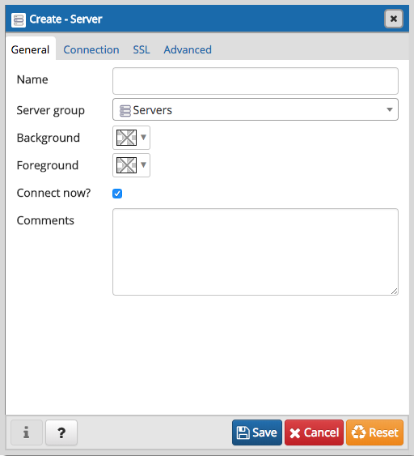
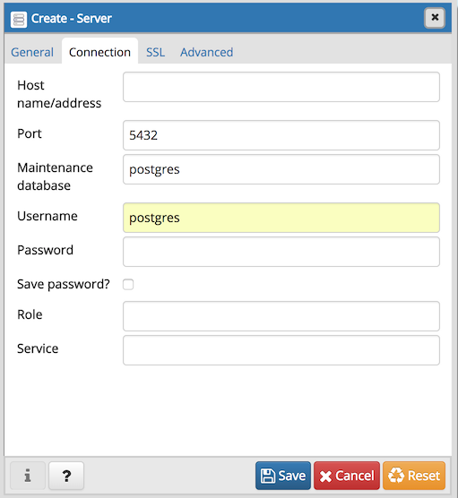
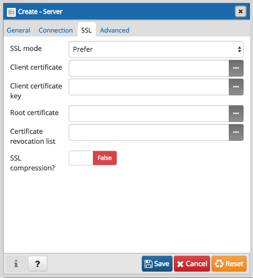
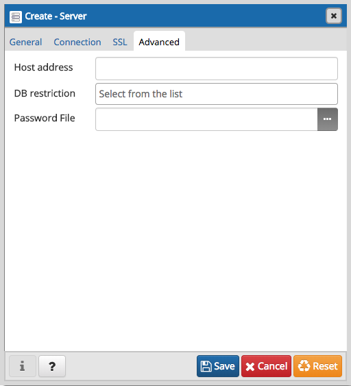

The Server Dialog¶
Use the Server dialog to describe a connection to a server. Note: you must ensure that the pg_hba.conf file of the server from which you are connecting allows connections from the host of the client.
Use the fields in the General tab to identify the server:
- Use the Name field to add a descriptive name for the server; the name specified will be displayed in the Browser tree control.
- Use the drop-down list box in the Server group field to select the parent node for the server; the server will be displayed in the Browser tree control within the specified group.
- Use the color-picker in the Background field to specify the background color for the server.
- Use the color-picker in the Foreground field to specify the foreground color for the server.
- If the Connect now? checkbox is checked, the client will attempt a connection to the server upon completion of the dialog; this is the default
- Provide a comment about the server in the Comments field.
Click the Connection tab to continue.
Use the fields in the Connection tab to configure a connection:
- Specify the IP address of the server host, or the fully qualified domain name in the Host name/address field. If you provide a unix domain socket, the directory name must begin with a “/”.
- Enter the listener port number of the server host in the Port field. The default is 5432.
- Use the Maintenance database field to specify the name of the initial database to which the client will connect. If you will be using pgAgent or adminpack objects, the pgAgent schema and adminpack objects should be installed on that database.
- Use the Username field to specify the name of a role that will be used when authenticating with the server.
- Use the Password field to provide a password that will be supplied when authenticating with the server.
- Check the box next to Save password? to instruct pgAdmin to save the password for future use.
- Use the Role field to specify the name of a role that has privileges that will be conveyed to the client after authentication with the server. This selection allows you to connect as one role, and then assume the permissions of this specified role after the connection is established. Note that the connecting role must be a member of the role specified.
- Use the Service field to specify the service name. For more information, see Section 33.16 of the Postgres documentation.
Click the SSL tab to continue.
Use the fields in the SSL tab to configure SSL:
- Use the drop-down list box in the SSL field to select the type of SSL connection the server should use. For more information about using SSL encryption, see Section 33.18 of the Postgres documentation.
If pgAdmin is installed in Server mode (the default mode), you can use the platform-specific File manager dialog to upload files that support SSL encryption to the server. To access the File manager dialog, click the icon that is located to the right of each of the following fields.
- Use the Client certificate field to specify the file containing the client SSL certificate. This file will replace the default ~/.postgresql/postgresql.crt if pgAdmin is installed in Desktop mode, and <STORAGE_DIR>/<USERNAME>/.postgresql/postgresql.crt if pgAdmin is installed in Web mode. This parameter is ignored if an SSL connection is not made.
- Use the Client certificate key field to specify the file containing the secret key used for the client certificate. This file will replace the default ~/.postgresql/postgresql.key if pgAdmin is installed in Desktop mode, and <STORAGE_DIR>/<USERNAME>/.postgresql/postgresql.key if pgAdmin is installed in Web mode. This parameter is ignored if an SSL connection is not made.
- Use the Root certificate field to specify the file containing the SSL certificate authority. This file will replace the default ~/.postgresql/root.crt. This parameter is ignored if an SSL connection is not made.
- Use the Certificate revocation list field to specify the file containing the SSL certificate revocation list. This list will replace the default list, found in ~/.postgresql/root.crl. This parameter is ignored if an SSL connection is not made.
- When SSL compression? is set to True, data sent over SSL connections will be compressed. The default value is False (compression is disabled). This parameter is ignored if an SSL connection is not made.
WARNING: In Server mode, certificates, private keys, and the revocation list are stored in the per-user file storage area on the server, which is owned by the user account under which the pgAdmin server process is run. This means that administrators of the server may be able to access those files; appropriate caution should be taken before choosing to use this feature.
Click the Advanced tab to continue.
Use the fields in the Advanced tab to configure a connection:
- Specify the IP address of the server host in the Host address field. Using this field to specify the host IP address may save time by avoiding a DNS lookup on connection, but it may be useful to specify both a host name and address when using Kerberos, GSSAPI, or SSPI authentication methods, as well as for verify-full SSL certificate verification.
- Use the DB restriction field to provide a SQL restriction that will be used against the pg_database table to limit the databases that you see. For example, you might enter: live_db test_db so that only live_db and test_db are shown in the pgAdmin browser. Separate entries with a comma or tab as you type.
- Use the Password File field to specify the location of a password file (.pgpass). A .pgpass file allows a user to login without providing a password when they connect. For more information, see Section 33.15 of the Postgres documentation.
NOTE: The password file option is only supported when pgAdmin is using libpq v10.0 or later to connect to the server.
- Click the Save button to save your work.
- Click the Cancel button to exit without saving your work.
- Click the Reset button to return the values specified on the Server dialog to their original condition.